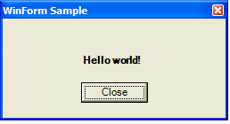

The following tutorial shows how to create and execute the simple script that uses WinForm.
By using any text editor (eg. Notepad.exe) create file WinForm.cs that contains the WinForm sample
code.
Click here to obtain listing of WinForm.cs
Open command prompt. Make sure current directory is the directory where WinForm.cs is located.
Execute the following command in command prompt:
The script will create and show the following dialog.

In this example the script creates an instance of FCL class System.Windows.Forms.Form. The form initialisation code is placed into InitializeComponent() method to make it compatible with the Visual Studio form designer however it can be placed in any other appropriate place (eg. Form1 constructor).
This example is a part of sample library (cs-script/Samples folder). It can be easily recreated to be used as a skeleton code for your WinForm script. To do this execute the following command in your code:
This will instruct the script engine to output sample code in a file in the current directory.
CS-Script tutorials | Command-line interface